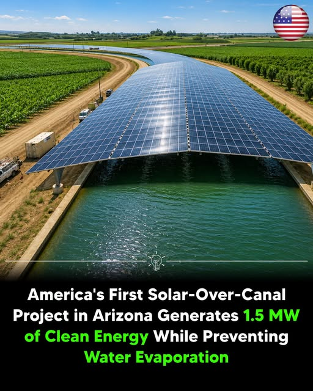

Terra Nova Development · Article #107
America’s First Solar-Over-Canal Project in Arizona
Clean Energy Generation and Water Conservation

Download this article as a Word documentA pioneering project in the Gila River Indian Community
Project overview
The Gila River Indian Community Solar-Over-Canal Project in Sacaton, Arizona, is the first operational solar-over-canal system in the United States. Built above the Casa Blanca Canal, the pilot covers about 2,782 feet (848 meters) of irrigation canal with roughly 2,556 solar panels. The project began generating electricity in late 2024 and was officially completed in 2025.
Energy production
The pilot has an installed solar capacity of 1.31 megawatts (MW), sometimes rounded to approximately 1.3–1.5 MW, and is expected to generate approximately 2.26 gigawatt-hours (GWh) of electricity annually for tribal irrigation facilities and community operations. The project does not include battery energy storage; electricity is supplied directly to the local grid and irrigation infrastructure.
Water-saving benefits
Installing solar panels over the canal offers several potential advantages. Shade from the panels reduces evaporation, helping conserve scarce water in Arizona’s desert climate. Cooler conditions above the canal can improve solar-panel efficiency. Covering the canal may also limit algae and aquatic weed growth, reducing maintenance needs.
Funding and partnerships
The project received approximately $5.65 million in funding from the U.S. Bureau of Reclamation through the Inflation Reduction Act and was developed in partnership with the U.S. Army Corps of Engineers and Native-owned contractor Numunu. The pilot is intended to demonstrate a scalable model combining renewable-energy generation with water conservation.
A model for wider use
Following the pilot, the Gila River Indian Community has begun expanding its solar-over-canal program with additional installations and plans for renewable-energy projects. This demonstration is being considered as a model for similar canal-top solar developments in the western United States, where clean electricity and water conservation are important priorities.
Sources identified in the supplied article
- Arizona Department of Water Resources
- United States Department of the Army
- U.S. Department of the Interior
Editorial note: Project specifications, dates, funding, and projected benefits are reproduced from the supplied source text and have not been independently verified for this document.